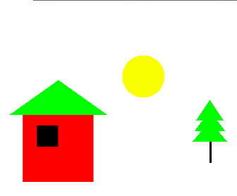
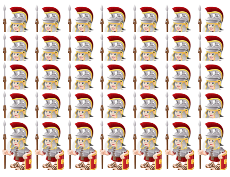
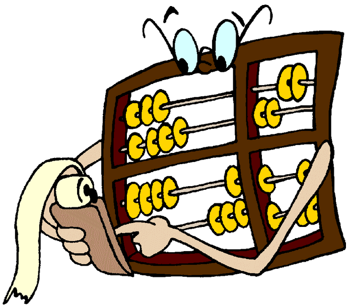
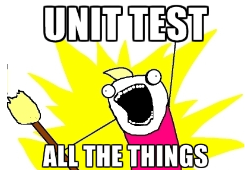
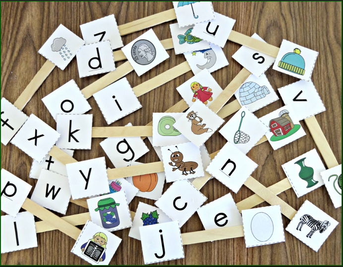
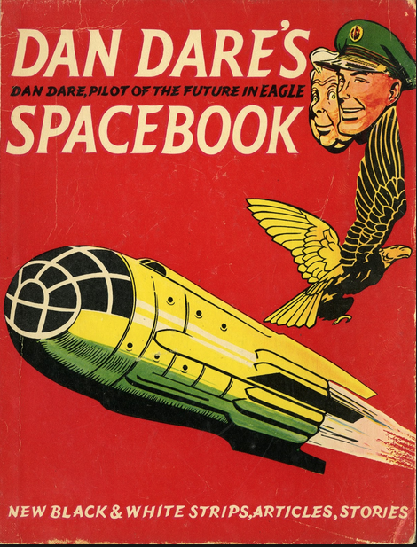
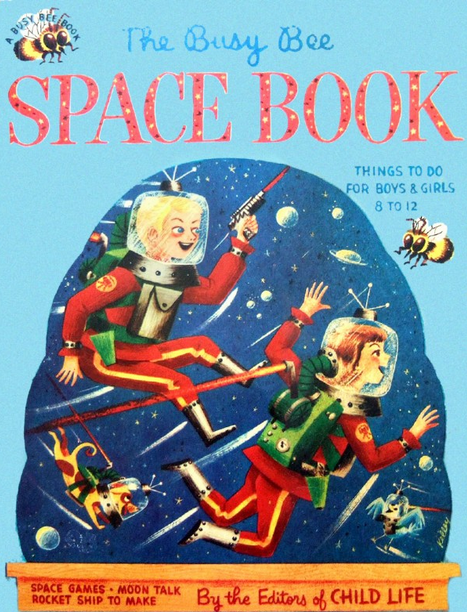
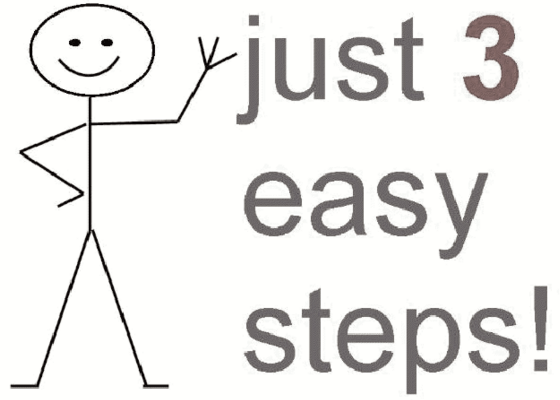
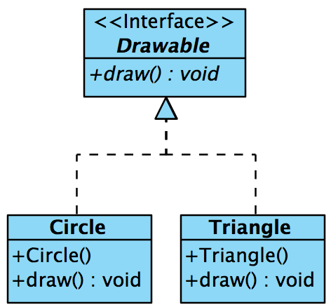

Classes-objects
Programming


Introduction to the Java programming language, beginning with the concepts of classes and objects and instruction in the use of a key tool used throughout the course, namely the BlueJ Integrated Development Environment (IDE).
Class-components

Here you will be introduced to Java source code and acquire practice in the use of methods and parameter passing. The state of an object will be explored. You will write code to solve simple problems related to geometric shapes such as a circle and right circular cone, for example calculating the area and perimeter of the circle and the volume of the cone.
Class-components-Solutions
/book-solutions/img/main.png)
This lab contains sample solutions to the exercise set.
Ticket-Machine

In this lab we shall build a very basic virtual ticket machine and in doing so gain further experience with some of the elements of classes such as fields, constructors and methods. We shall conduct a rudimentary analysis of the ticket machine class and implement some design improvements.
Ticket-Machine-Solutions
/book-a/img/main.png)
Solutions to the exercise set are provided here.
Abstraction-modularization[1]

Use set of object from shapes project to manually create a house object. Use existing Square, Circle and Triangle classes. Manually assemble component set to create and display initial design. Develop a new class Rectangle by refactoring Square class. Further refactor Circle and Triangle classes.
Abstraction-modularization[2]

Develop a new class Tree using Rectangle and Triangle classes. Develop a new class Picture containing House, Circle (sun) and Tree fields.
Abstraction-modularization[3]

Based on BlueJ ClockDisplay progressively develop NumberDisplay class to display a pair of digits to represent hours and minutes using the existing BlueJ class Clock to drive the ClockDisplay.
Abstraction-modularization-Solutions-[1-2]
/book-solutions-ab/img/main.png)
These are the solutions to the exercises set in the lab relating to shapes.
Abstraction-modularization-Solutions-[3]
/book-solutions-c/img/main.png)
These are the solutions to the exercises relating to the BlueJ ClockDisplay and NumberDisplay classes.
Generics-Control-flow

Use BlueJ Notebook class to gain basic experience with the ArrayList collection class. Explore some of its methods by generating and manipulating test data. Gain experience in looping using for, enhanced for, while, do-while and iterators.
Control-flow
Gain further flow control experience. Introduce a very basic sorting algorithm Understand Autoboxing and Unboxing. A brief discussion on precedence of operators presented.
Notebook_solutions-[1-3]
/book-solutions-a/img/main.png)
These are the solutions to the exercises set in the session Grouping Objects and relating to
- BlueJ Notebook class
Grouping-objects-solutions-[1-7]
/book-solutions-b1/img/main.png)
These are the solutions to the first seven exercises set in the session Grouping Objects and relating to
- arrays
- lists
- iterators
- control flow
- basic sorting
Grouping-objects-solutions-[8-13].md
/book-solutions-b2/img/main.png)
These are the remaining solutions to the exercises set in the session Grouping Objects and relating to
- arrays
- lists
- iterators
- control flow
- basic sorting
-
Encoding-solutions-[14-18].md
/book-solutions-b3/img/main.png)
Solutions to number systems and character encoding lab.
Assignment-1
Assignment 1: This assignment is based on materials contained in the slide decks and labs in the first 4 topics, namely, Introduction to Java programming language, Analysis & refactoring class, Object Interaction and Grouping Objects.
Assignment-1
/book-assignment-1-solns/img/main.png)
Assignment 1: This is a sample solution set to Assignment 1 which is based on materials contained in the preentations and labs in the first 3 topics, namely, Introduction to Java programming language, Analysis & refactoring class and Object Interaction. There are 4 questions, the first 2 relating to simple class design, the 3rd on the subject of string manipulation and the final one requiring an extension to the BlueJ clock display.
Collections

We revisit arrays and ArrayLists and introduce two other collection classes, the HashMap and HashSet. A HashMap comprises key-value pairs. A HashSet matches the mathematical model of a set. We use the Random class, a member of the java.util package, to generate pin numbers for use in an introductory bank class.
Class-members

Static variables and methods belong to the class rather than to an instance of the class. Static methods may be invoked using the class name (example System.out) whereas non-static methods may only be invoked on an object. A Static variable is shared by every instance of its containing class and is to be found at one fixed location in memory.
Caesar Cipher

We gain further experience in working with the char and Character types by exploring the simple Caesar Cipher.
Collections-Solutions
/book-solutions-a/img/main.png)
These are the solutions to first lab in the session More sophisticated behaviour that deals with arrays, maps and sets through the development of a simple bank class.
Class-members-Solutions
/book-solutions-b/img/main.png)
These are the solutions to the second lab in the session More sophisticated behaviour that deals with class and instance variables and methods.
Caesar-Cipher-Solutions
/book-solutions-c/img/main.png)
These are sample solutions to the Caesar Cipher lab.
Testing-&-Debugging

We explore the BlueJ diary-prototype project as a prelude to unit and regression testing. In introducing unit tests we examine the role and experiment with both positive and negative tests.
Testing-&-Debugging-(contd.)
We implement some simple unit tests. We first test manually and progress to semi-automated tests. Then we introduce test automation by showing how batches of unit tests can be run automatically. The BlueJ Debugger is used to locate any errors discovered during testing. A helpful feature of the BlueJ framework is exercised to record and replay a suite of tests.
Sorting-searching

Explore two contrasting sort algorithms, the inefficient Selection sort and a significantly faster Merge sort. Use Binary search to locate a specific element in a sorted array. Explore the performance of these algorithms. The results may surprise you.
Testing-&-Debugging-Solutions
/book-a-b-solutions/img/main.png)
These are the solutions to the labs in this session BlueJ Debug & Unit Test.
Sorting-&-Searching-Solutions
/book-c-solutions/img/main.png)
These are the solutions to the sorting and searching exercises.
Spacebook-(Part-1)

Spacebook Application (Part 1)
Acquire a basic knowledge of class design by designing and writing an application named Spacebook. The application initially comprises two classes, User and Friendship. User contains personal information about a user. Friendship facilitates a relationship between two users. The application is built as a series of iterations, each iteration being a standalone application that compiles and runs without error and that builds on the previous one, eventually resulting in the completed application.
Spacebook-(Part-2)

Spacebook Application (Part 2)
In the second lab we continue to develop Spacebook. A new class, Message, is introduced to facilitate communication between users. A Message object contains the message as well as references to both the originator and target of the communication. We gain further experience in using collection classes such as ArrayList. Both manual and unit testing is employed, advantage being taken of our previous experience with the JUnit testing framework. The lab concludes with a short exercise set.
Spacebook-Solutions
/book-solutions/img/main.png)
These are sample solutions to the exercises set in the labs in the session Designing classes (Spacebook).
Assignment-2

Based on materials covered in presentations and labs to date namely Introduction to Java language, Analysis and refactoring class, Object interaction, Grouping objects, More sophisticated behaviour, Testing, debugging, searching and sorting and Designing classes (Spacebook).
Using_Interfaces

A Java 7 Interface is a type comprising a group of public method headers (return type and signature). It may also include constant declarations that are static public by default. Methods are not implemented in the interface definition. Implementation takes place in classes that use (implement) the interfaces. An interface only specifies behaviour: one is not allowed to create objects of an interface. However, an interface type variable may refer to (be bound to) an object of a class that implements that interface. Java 8 interfaces have additional features that are not addressed here.